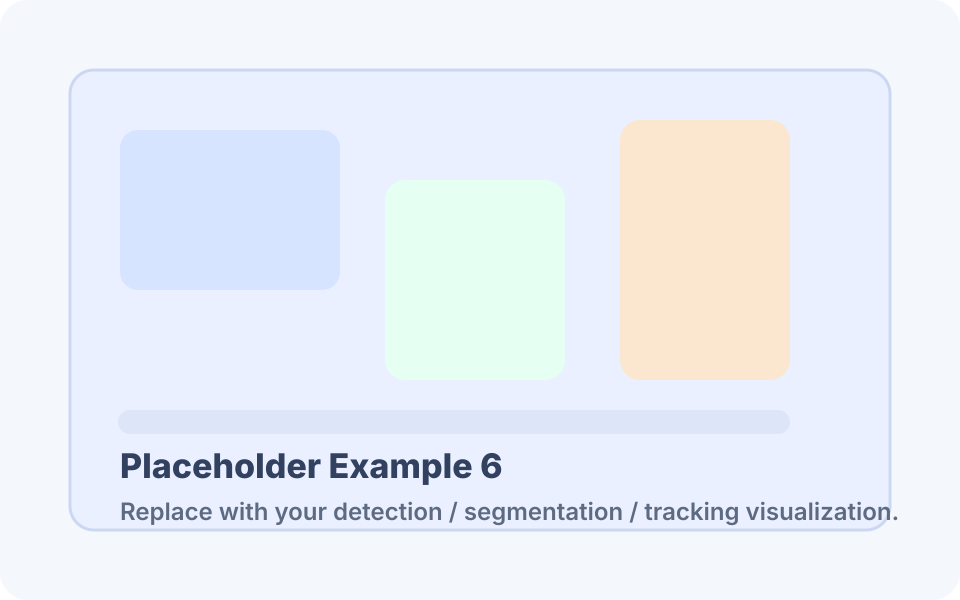

数据集概览
用卡片快速展示你的数据规模、任务类型和采集设置。
摘要
智能养殖场景下，公开可用的奶山羊多任务视觉数据集仍然稀缺。为支持检测、分割、跟踪、重识别、行为识别与羊病智能诊断等任务，我们构建了一个具有统一组织结构和跨任务评测接口的数据集模板展示站点。
该模板强调三类核心信息：数据采集与标注规范、代表性视觉样例、以及标准化 benchmark 展示方式。你可以直接替换文本、链接、图片和表格，将其作为论文配套项目页、数据集官网或实验平台展示页。
数据集描述
建议把采集设置、任务定义、标注结构和数据划分写清楚，方便审稿人与使用者理解。
采集设置
固定顶置与侧视摄像头，覆盖多栏舍、多时间段、多光照条件，支持连续视频采集与多场景分析。
任务覆盖
目标检测、实例分割、多目标跟踪、个体重识别、行为识别、疾病诊断等任务可统一展示。
标注结构
推荐展示 JSON 或 COCO/MOT 风格标注组织方式，并补充类别定义、ID 规则和质量控制流程。
数据划分
建议提供 train / val / test 划分原则，以及跨场景、跨个体或跨时段评测设置说明。
示例：统一数据组织结构
dataset/
├── images/
│ ├── train/
│ ├── val/
│ └── test/
├── videos/
├── annotations/
│ ├── detection.json
│ ├── tracking.json
│ ├── reid_meta.csv
│ └── behavior_labels.json
├── splits/
│ ├── train.txt
│ ├── val.txt
│ └── test.txt
└── docs/
├── label_definition.pdf
└── license.txt可视化样例
这里适合放原始图像、检测框、分割 mask、跟踪轨迹、行为类别和病害样例。

基准结果
建议展示多个任务的 baseline，并保持指标和划分协议一致。
| 方法 | Task | Metric | Score |
|---|---|---|---|
| YOLO-Base | Detection | mAP50 | 88.4 |
| Mask-Base | Segmentation | mIoU | 76.2 |
| DeepSORT-Base | Tracking | IDF1 | 81.9 |
| ReIDNet | ReID | Rank-1 | 90.5 |
| SlowFast-Base | Behavior | F1 | 84.7 |
引用
BibTeX
@article{yourdataset2026,
title = {GoatMVT: A Multi-Task Vision Dataset for Intelligent Dairy Goat Farming},
author = {Your Name and Coauthors},
journal = {Your Target Venue},
year = {2026}
}